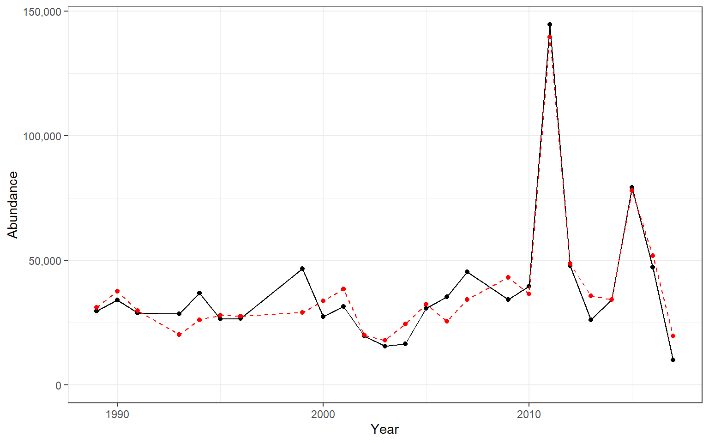

3.2 Recruitment
3.2.1 Generalized linear model
Start: AIC=313266.6 Value ~ 1
Df Deviance AIC- spring_OI_SST_Anomaly_degreesC 1 230370 230683
- summer_OI_SST_Anomaly_degreesC 1 241599 241911
- fall_OI_SST_Anomaly_degreesC 1 244357 244669
- cumulative_intensity_degrees_C 1 245065 245378
312958 313267
Step: AIC=230682.5 Value ~ spring_OI_SST_Anomaly_degreesC
Df Deviance AIC- fall_OI_SST_Anomaly_degreesC 1 199881 200196
- summer_OI_SST_Anomaly_degreesC 1 217435 217751
- cumulative_intensity_degrees_C 1 225947 226262
230370 230683 - spring_OI_SST_Anomaly_degreesC 1 312958 313267
Step: AIC=200196.5 Value ~ spring_OI_SST_Anomaly_degreesC + fall_OI_SST_Anomaly_degreesC
Df Deviance AIC- fall_OI_SST_Anomaly_degreesC:spring_OI_SST_Anomaly_degreesC 1 175509 175828
- cumulative_intensity_degrees_C 1 198832 199151
- summer_OI_SST_Anomaly_degreesC 1 199469 199788
199881 200196 - fall_OI_SST_Anomaly_degreesC 1 230370 230683
- spring_OI_SST_Anomaly_degreesC 1 244357 244669
Step: AIC=175827.5 Value ~ spring_OI_SST_Anomaly_degreesC + fall_OI_SST_Anomaly_degreesC + spring_OI_SST_Anomaly_degreesC:fall_OI_SST_Anomaly_degreesC
Df Deviance AIC- cumulative_intensity_degrees_C 1 150085 150407
- summer_OI_SST_Anomaly_degreesC 1 175419 175741
175509 175828 - spring_OI_SST_Anomaly_degreesC:fall_OI_SST_Anomaly_degreesC 1 199881 200196
Step: AIC=150406.8 Value ~ spring_OI_SST_Anomaly_degreesC + fall_OI_SST_Anomaly_degreesC + cumulative_intensity_degrees_C + spring_OI_SST_Anomaly_degreesC:fall_OI_SST_Anomaly_degreesC
Df Deviance AIC- summer_OI_SST_Anomaly_degreesC 1 109865 110190
- cumulative_intensity_degrees_C:spring_OI_SST_Anomaly_degreesC 1 142289 142615
- cumulative_intensity_degrees_C:fall_OI_SST_Anomaly_degreesC 1 148182 148507
150085 150407 - cumulative_intensity_degrees_C 1 175509 175828
- spring_OI_SST_Anomaly_degreesC:fall_OI_SST_Anomaly_degreesC 1 198832 199151
Step: AIC=110190.5 Value ~ spring_OI_SST_Anomaly_degreesC + fall_OI_SST_Anomaly_degreesC + cumulative_intensity_degrees_C + summer_OI_SST_Anomaly_degreesC + spring_OI_SST_Anomaly_degreesC:fall_OI_SST_Anomaly_degreesC
Df Deviance AIC- fall_OI_SST_Anomaly_degreesC:summer_OI_SST_Anomaly_degreesC 1 106361 106689
- spring_OI_SST_Anomaly_degreesC:summer_OI_SST_Anomaly_degreesC 1 106993 107321
- cumulative_intensity_degrees_C:spring_OI_SST_Anomaly_degreesC 1 108225 108554
- cumulative_intensity_degrees_C:fall_OI_SST_Anomaly_degreesC 1 109162 109491
- cumulative_intensity_degrees_C:summer_OI_SST_Anomaly_degreesC 1 109689 110018
109865 110190 - summer_OI_SST_Anomaly_degreesC 1 150085 150407
- cumulative_intensity_degrees_C 1 175419 175741
- spring_OI_SST_Anomaly_degreesC:fall_OI_SST_Anomaly_degreesC 1 196059 196381
Step: AIC=106689.1 Value ~ spring_OI_SST_Anomaly_degreesC + fall_OI_SST_Anomaly_degreesC + cumulative_intensity_degrees_C + summer_OI_SST_Anomaly_degreesC + spring_OI_SST_Anomaly_degreesC:fall_OI_SST_Anomaly_degreesC + fall_OI_SST_Anomaly_degreesC:summer_OI_SST_Anomaly_degreesC
Df Deviance AIC- spring_OI_SST_Anomaly_degreesC:summer_OI_SST_Anomaly_degreesC 1 104535 104866
- cumulative_intensity_degrees_C:fall_OI_SST_Anomaly_degreesC 1 105617 105949
- cumulative_intensity_degrees_C:summer_OI_SST_Anomaly_degreesC 1 106122 106454
- cumulative_intensity_degrees_C:spring_OI_SST_Anomaly_degreesC 1 106353 106684
106361 106689 - fall_OI_SST_Anomaly_degreesC:summer_OI_SST_Anomaly_degreesC 1 109865 110190
- spring_OI_SST_Anomaly_degreesC:fall_OI_SST_Anomaly_degreesC 1 153058 153383
- cumulative_intensity_degrees_C 1 175138 175464
Step: AIC=104866.4 Value ~ spring_OI_SST_Anomaly_degreesC + fall_OI_SST_Anomaly_degreesC + cumulative_intensity_degrees_C + summer_OI_SST_Anomaly_degreesC + spring_OI_SST_Anomaly_degreesC:fall_OI_SST_Anomaly_degreesC + fall_OI_SST_Anomaly_degreesC:summer_OI_SST_Anomaly_degreesC + spring_OI_SST_Anomaly_degreesC:summer_OI_SST_Anomaly_degreesC
Df Deviance AIC- fall_OI_SST_Anomaly_degreesC:spring_OI_SST_Anomaly_degreesC:summer_OI_SST_Anomaly_degreesC 1 102928 103262
- cumulative_intensity_degrees_C:spring_OI_SST_Anomaly_degreesC 1 103154 103488
- cumulative_intensity_degrees_C:fall_OI_SST_Anomaly_degreesC 1 103519 103854
- cumulative_intensity_degrees_C:summer_OI_SST_Anomaly_degreesC 1 104481 104816
104535 104866 - spring_OI_SST_Anomaly_degreesC:summer_OI_SST_Anomaly_degreesC 1 106361 106689
- fall_OI_SST_Anomaly_degreesC:summer_OI_SST_Anomaly_degreesC 1 106993 107321
- cumulative_intensity_degrees_C 1 138468 138796
- spring_OI_SST_Anomaly_degreesC:fall_OI_SST_Anomaly_degreesC 1 152116 152444
Step: AIC=103262.5 Value ~ spring_OI_SST_Anomaly_degreesC + fall_OI_SST_Anomaly_degreesC + cumulative_intensity_degrees_C + summer_OI_SST_Anomaly_degreesC + spring_OI_SST_Anomaly_degreesC:fall_OI_SST_Anomaly_degreesC + fall_OI_SST_Anomaly_degreesC:summer_OI_SST_Anomaly_degreesC + spring_OI_SST_Anomaly_degreesC:summer_OI_SST_Anomaly_degreesC + spring_OI_SST_Anomaly_degreesC:fall_OI_SST_Anomaly_degreesC:summer_OI_SST_Anomaly_degreesC
Df Deviance AIC- cumulative_intensity_degrees_C:fall_OI_SST_Anomaly_degreesC 1 95656 95994
- cumulative_intensity_degrees_C:summer_OI_SST_Anomaly_degreesC 1 100172 100510
- cumulative_intensity_degrees_C:spring_OI_SST_Anomaly_degreesC 1 102693 103031
102928 103262 - spring_OI_SST_Anomaly_degreesC:fall_OI_SST_Anomaly_degreesC:summer_OI_SST_Anomaly_degreesC 1 104535 104866
- cumulative_intensity_degrees_C 1 137095 137426
Step: AIC=95994.04 Value ~ spring_OI_SST_Anomaly_degreesC + fall_OI_SST_Anomaly_degreesC + cumulative_intensity_degrees_C + summer_OI_SST_Anomaly_degreesC + spring_OI_SST_Anomaly_degreesC:fall_OI_SST_Anomaly_degreesC + fall_OI_SST_Anomaly_degreesC:summer_OI_SST_Anomaly_degreesC + spring_OI_SST_Anomaly_degreesC:summer_OI_SST_Anomaly_degreesC + fall_OI_SST_Anomaly_degreesC:cumulative_intensity_degrees_C + spring_OI_SST_Anomaly_degreesC:fall_OI_SST_Anomaly_degreesC:summer_OI_SST_Anomaly_degreesC
Df Deviance AIC- cumulative_intensity_degrees_C:summer_OI_SST_Anomaly_degreesC 1 93511 93852
- cumulative_intensity_degrees_C:spring_OI_SST_Anomaly_degreesC 1 94254 94595
95656 95994 - fall_OI_SST_Anomaly_degreesC:cumulative_intensity_degrees_C 1 102928 103262
- spring_OI_SST_Anomaly_degreesC:fall_OI_SST_Anomaly_degreesC:summer_OI_SST_Anomaly_degreesC 1 103519 103854
Step: AIC=93852.42 Value ~ spring_OI_SST_Anomaly_degreesC + fall_OI_SST_Anomaly_degreesC + cumulative_intensity_degrees_C + summer_OI_SST_Anomaly_degreesC + spring_OI_SST_Anomaly_degreesC:fall_OI_SST_Anomaly_degreesC + fall_OI_SST_Anomaly_degreesC:summer_OI_SST_Anomaly_degreesC + spring_OI_SST_Anomaly_degreesC:summer_OI_SST_Anomaly_degreesC + fall_OI_SST_Anomaly_degreesC:cumulative_intensity_degrees_C + cumulative_intensity_degrees_C:summer_OI_SST_Anomaly_degreesC + spring_OI_SST_Anomaly_degreesC:fall_OI_SST_Anomaly_degreesC:summer_OI_SST_Anomaly_degreesC
Df Deviance AIC- cumulative_intensity_degrees_C:fall_OI_SST_Anomaly_degreesC:summer_OI_SST_Anomaly_degreesC 1 89530 89875
- cumulative_intensity_degrees_C:spring_OI_SST_Anomaly_degreesC 1 93454 93798
93511 93852 - cumulative_intensity_degrees_C:summer_OI_SST_Anomaly_degreesC 1 95656 95994
- fall_OI_SST_Anomaly_degreesC:cumulative_intensity_degrees_C 1 100172 100510
- spring_OI_SST_Anomaly_degreesC:fall_OI_SST_Anomaly_degreesC:summer_OI_SST_Anomaly_degreesC 1 102308 102646
Step: AIC=89874.72 Value ~ spring_OI_SST_Anomaly_degreesC + fall_OI_SST_Anomaly_degreesC + cumulative_intensity_degrees_C + summer_OI_SST_Anomaly_degreesC + spring_OI_SST_Anomaly_degreesC:fall_OI_SST_Anomaly_degreesC + fall_OI_SST_Anomaly_degreesC:summer_OI_SST_Anomaly_degreesC + spring_OI_SST_Anomaly_degreesC:summer_OI_SST_Anomaly_degreesC + fall_OI_SST_Anomaly_degreesC:cumulative_intensity_degrees_C + cumulative_intensity_degrees_C:summer_OI_SST_Anomaly_degreesC + spring_OI_SST_Anomaly_degreesC:fall_OI_SST_Anomaly_degreesC:summer_OI_SST_Anomaly_degreesC + fall_OI_SST_Anomaly_degreesC:cumulative_intensity_degrees_C:summer_OI_SST_Anomaly_degreesC
Df Deviance AIC- cumulative_intensity_degrees_C:spring_OI_SST_Anomaly_degreesC 1 88987 89335
89530 89875 - spring_OI_SST_Anomaly_degreesC:fall_OI_SST_Anomaly_degreesC:summer_OI_SST_Anomaly_degreesC 1 90763 91104
- fall_OI_SST_Anomaly_degreesC:cumulative_intensity_degrees_C:summer_OI_SST_Anomaly_degreesC 1 93511 93852
Step: AIC=89334.98 Value ~ spring_OI_SST_Anomaly_degreesC + fall_OI_SST_Anomaly_degreesC + cumulative_intensity_degrees_C + summer_OI_SST_Anomaly_degreesC + spring_OI_SST_Anomaly_degreesC:fall_OI_SST_Anomaly_degreesC + fall_OI_SST_Anomaly_degreesC:summer_OI_SST_Anomaly_degreesC + spring_OI_SST_Anomaly_degreesC:summer_OI_SST_Anomaly_degreesC + fall_OI_SST_Anomaly_degreesC:cumulative_intensity_degrees_C + cumulative_intensity_degrees_C:summer_OI_SST_Anomaly_degreesC + spring_OI_SST_Anomaly_degreesC:cumulative_intensity_degrees_C + spring_OI_SST_Anomaly_degreesC:fall_OI_SST_Anomaly_degreesC:summer_OI_SST_Anomaly_degreesC + fall_OI_SST_Anomaly_degreesC:cumulative_intensity_degrees_C:summer_OI_SST_Anomaly_degreesC
Df Deviance AIC- cumulative_intensity_degrees_C:spring_OI_SST_Anomaly_degreesC:summer_OI_SST_Anomaly_degreesC 1 61750 62101
- cumulative_intensity_degrees_C:fall_OI_SST_Anomaly_degreesC:spring_OI_SST_Anomaly_degreesC 1 75429 75780
88987 89335 - spring_OI_SST_Anomaly_degreesC:fall_OI_SST_Anomaly_degreesC:summer_OI_SST_Anomaly_degreesC 1 89260 89605
- spring_OI_SST_Anomaly_degreesC:cumulative_intensity_degrees_C 1 89530 89875
- fall_OI_SST_Anomaly_degreesC:cumulative_intensity_degrees_C:summer_OI_SST_Anomaly_degreesC 1 93454 93798
Step: AIC=62100.83 Value ~ spring_OI_SST_Anomaly_degreesC + fall_OI_SST_Anomaly_degreesC + cumulative_intensity_degrees_C + summer_OI_SST_Anomaly_degreesC + spring_OI_SST_Anomaly_degreesC:fall_OI_SST_Anomaly_degreesC + fall_OI_SST_Anomaly_degreesC:summer_OI_SST_Anomaly_degreesC + spring_OI_SST_Anomaly_degreesC:summer_OI_SST_Anomaly_degreesC + fall_OI_SST_Anomaly_degreesC:cumulative_intensity_degrees_C + cumulative_intensity_degrees_C:summer_OI_SST_Anomaly_degreesC + spring_OI_SST_Anomaly_degreesC:cumulative_intensity_degrees_C + spring_OI_SST_Anomaly_degreesC:fall_OI_SST_Anomaly_degreesC:summer_OI_SST_Anomaly_degreesC + fall_OI_SST_Anomaly_degreesC:cumulative_intensity_degrees_C:summer_OI_SST_Anomaly_degreesC + spring_OI_SST_Anomaly_degreesC:cumulative_intensity_degrees_C:summer_OI_SST_Anomaly_degreesC
Df Deviance AIC- cumulative_intensity_degrees_C:fall_OI_SST_Anomaly_degreesC:spring_OI_SST_Anomaly_degreesC 1 56475 56829
61750 62101 - spring_OI_SST_Anomaly_degreesC:fall_OI_SST_Anomaly_degreesC:summer_OI_SST_Anomaly_degreesC 1 68527 68875
- fall_OI_SST_Anomaly_degreesC:cumulative_intensity_degrees_C:summer_OI_SST_Anomaly_degreesC 1 78249 78596
- spring_OI_SST_Anomaly_degreesC:cumulative_intensity_degrees_C:summer_OI_SST_Anomaly_degreesC 1 88987 89335
Step: AIC=56828.65 Value ~ spring_OI_SST_Anomaly_degreesC + fall_OI_SST_Anomaly_degreesC + cumulative_intensity_degrees_C + summer_OI_SST_Anomaly_degreesC + spring_OI_SST_Anomaly_degreesC:fall_OI_SST_Anomaly_degreesC + fall_OI_SST_Anomaly_degreesC:summer_OI_SST_Anomaly_degreesC + spring_OI_SST_Anomaly_degreesC:summer_OI_SST_Anomaly_degreesC + fall_OI_SST_Anomaly_degreesC:cumulative_intensity_degrees_C + cumulative_intensity_degrees_C:summer_OI_SST_Anomaly_degreesC + spring_OI_SST_Anomaly_degreesC:cumulative_intensity_degrees_C + spring_OI_SST_Anomaly_degreesC:fall_OI_SST_Anomaly_degreesC:summer_OI_SST_Anomaly_degreesC + fall_OI_SST_Anomaly_degreesC:cumulative_intensity_degrees_C:summer_OI_SST_Anomaly_degreesC + spring_OI_SST_Anomaly_degreesC:cumulative_intensity_degrees_C:summer_OI_SST_Anomaly_degreesC + spring_OI_SST_Anomaly_degreesC:fall_OI_SST_Anomaly_degreesC:cumulative_intensity_degrees_C
Df Deviance AIC- cumulative_intensity_degrees_C:fall_OI_SST_Anomaly_degreesC:spring_OI_SST_Anomaly_degreesC:summer_OI_SST_Anomaly_degreesC 1 40525 40882
56475 56829 - fall_OI_SST_Anomaly_degreesC:cumulative_intensity_degrees_C:summer_OI_SST_Anomaly_degreesC 1 56724 57075
- spring_OI_SST_Anomaly_degreesC:fall_OI_SST_Anomaly_degreesC:summer_OI_SST_Anomaly_degreesC 1 59521 59872
- spring_OI_SST_Anomaly_degreesC:fall_OI_SST_Anomaly_degreesC:cumulative_intensity_degrees_C 1 61750 62101
- spring_OI_SST_Anomaly_degreesC:cumulative_intensity_degrees_C:summer_OI_SST_Anomaly_degreesC 1 75429 75780
Step: AIC=40881.97 Value ~ spring_OI_SST_Anomaly_degreesC + fall_OI_SST_Anomaly_degreesC + cumulative_intensity_degrees_C + summer_OI_SST_Anomaly_degreesC + spring_OI_SST_Anomaly_degreesC:fall_OI_SST_Anomaly_degreesC + fall_OI_SST_Anomaly_degreesC:summer_OI_SST_Anomaly_degreesC + spring_OI_SST_Anomaly_degreesC:summer_OI_SST_Anomaly_degreesC + fall_OI_SST_Anomaly_degreesC:cumulative_intensity_degrees_C + cumulative_intensity_degrees_C:summer_OI_SST_Anomaly_degreesC + spring_OI_SST_Anomaly_degreesC:cumulative_intensity_degrees_C + spring_OI_SST_Anomaly_degreesC:fall_OI_SST_Anomaly_degreesC:summer_OI_SST_Anomaly_degreesC + fall_OI_SST_Anomaly_degreesC:cumulative_intensity_degrees_C:summer_OI_SST_Anomaly_degreesC + spring_OI_SST_Anomaly_degreesC:cumulative_intensity_degrees_C:summer_OI_SST_Anomaly_degreesC + spring_OI_SST_Anomaly_degreesC:fall_OI_SST_Anomaly_degreesC:cumulative_intensity_degrees_C + spring_OI_SST_Anomaly_degreesC:fall_OI_SST_Anomaly_degreesC:cumulative_intensity_degrees_C:summer_OI_SST_Anomaly_degreesC
Df Deviance AICCall: glm(formula = Value ~ spring_OI_SST_Anomaly_degreesC + fall_OI_SST_Anomaly_degreesC + cumulative_intensity_degrees_C + summer_OI_SST_Anomaly_degreesC + spring_OI_SST_Anomaly_degreesC:fall_OI_SST_Anomaly_degreesC + fall_OI_SST_Anomaly_degreesC:summer_OI_SST_Anomaly_degreesC + spring_OI_SST_Anomaly_degreesC:summer_OI_SST_Anomaly_degreesC + fall_OI_SST_Anomaly_degreesC:cumulative_intensity_degrees_C + cumulative_intensity_degrees_C:summer_OI_SST_Anomaly_degreesC + spring_OI_SST_Anomaly_degreesC:cumulative_intensity_degrees_C + spring_OI_SST_Anomaly_degreesC:fall_OI_SST_Anomaly_degreesC:summer_OI_SST_Anomaly_degreesC + fall_OI_SST_Anomaly_degreesC:cumulative_intensity_degrees_C:summer_OI_SST_Anomaly_degreesC + spring_OI_SST_Anomaly_degreesC:cumulative_intensity_degrees_C:summer_OI_SST_Anomaly_degreesC + spring_OI_SST_Anomaly_degreesC:fall_OI_SST_Anomaly_degreesC:cumulative_intensity_degrees_C + spring_OI_SST_Anomaly_degreesC:fall_OI_SST_Anomaly_degreesC:cumulative_intensity_degrees_C:summer_OI_SST_Anomaly_degreesC, family = poisson(), data = recruit_data)
Deviance Residuals:
Min 1Q Median 3Q Max
-76.375 -20.827 -4.939 13.344 95.213
Coefficients:
Estimate Std. Error z value Pr(>|z|)
(Intercept) 1.036e+01 5.486e-03 1887.495 <2e-16
spring_OI_SST_Anomaly_degreesC 3.719e-01 8.391e-03 44.318 <2e-16
fall_OI_SST_Anomaly_degreesC 1.437e+00 8.063e-03 178.253 <2e-16
cumulative_intensity_degrees_C 4.175e-05 1.462e-04 0.286 0.775
summer_OI_SST_Anomaly_degreesC 4.132e-01 8.337e-03 49.562 <2e-16
spring_OI_SST_Anomaly_degreesC:fall_OI_SST_Anomaly_degreesC -1.944e+00 1.896e-02 -102.497 <2e-16
fall_OI_SST_Anomaly_degreesC:summer_OI_SST_Anomaly_degreesC 3.703e-01 8.769e-03 42.229 <2e-16
spring_OI_SST_Anomaly_degreesC:summer_OI_SST_Anomaly_degreesC -1.493e-01 1.453e-02 -10.273 <2e-16
fall_OI_SST_Anomaly_degreesC:cumulative_intensity_degrees_C -2.507e-02 1.399e-04 -179.194 <2e-16
cumulative_intensity_degrees_C:summer_OI_SST_Anomaly_degreesC -6.839e-03 1.200e-04 -57.003 <2e-16
spring_OI_SST_Anomaly_degreesC:cumulative_intensity_degrees_C -6.616e-03 2.799e-04 -23.641 <2e-16
spring_OI_SST_Anomaly_degreesC:fall_OI_SST_Anomaly_degreesC:summer_OI_SST_Anomaly_degreesC -1.314e+00 1.254e-02 -104.799 <2e-16
fall_OI_SST_Anomaly_degreesC:cumulative_intensity_degrees_C:summer_OI_SST_Anomaly_degreesC 1.803e-02 1.598e-04 112.866 <2e-16
spring_OI_SST_Anomaly_degreesC:cumulative_intensity_degrees_C:summer_OI_SST_Anomaly_degreesC 6.891e-03 1.308e-04 52.680 <2e-16
spring_OI_SST_Anomaly_degreesC:fall_OI_SST_Anomaly_degreesC:cumulative_intensity_degrees_C 4.152e-02 2.870e-04 144.686 <2e-16
spring_OI_SST_Anomaly_degreesC:fall_OI_SST_Anomaly_degreesC:cumulative_intensity_degrees_C:summer_OI_SST_Anomaly_degreesC -2.168e-02 1.759e-04 -123.209 <2e-16 ***
—
Signif. codes: 0 ‘’ 0.001 ’’ 0.01 ’’ 0.05 ‘.’ 0.1 ’ ’ 1
(Dispersion parameter for poisson family taken to be 1)
Null deviance: 312958 on 24 degrees of freedomResidual deviance: 40525 on 9 degrees of freedom AIC: 40862
Number of Fisher Scoring iterations: 5
